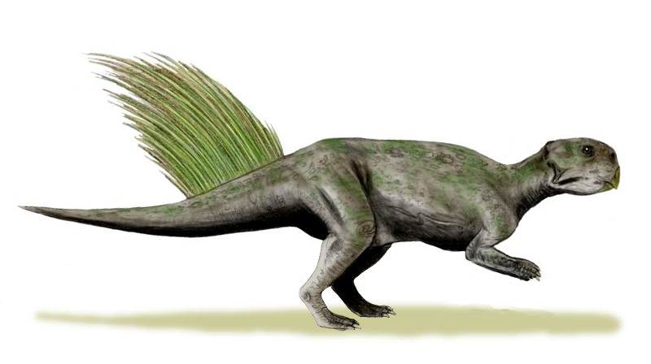

Add content to the book v2¶
Warning
This book is still being actively developed and this version of should be considered a rough draft. Follow me on GitHub to receive notifications when updates are made.
This section covers how to add content to your book. To utilize jupyter-book you will have to ultimately become very familiar with the official jupyter-book documentation. However for the purposes of kicking the tires this section will take you through the features that are either critical to use, or just cool. Many details will be skipped for the purposes of illustrating what authoring a book with jupyter-book might be like in practice. Consider this chapter a minimum subset of the available functionality needed for authoring content.
In an effort to make learning syntax more practical this section will take you through a narrative of adding content to the book you cloned while installing jupyter-book. After getting a feel for how everything works in this section you will probably graduate to just using the jupyter-book cheat sheet to rapidly find the syntax details you need.
Your mission, if you choose to accept it, is to write a (very brief and totally fictitious) book about dinosaurs using the sample book you cloned earlier as a template. Don’t worry if your paleontology skills are rusty, the focus of this activity is on writing the described syntax. I would like to apologize in advance to actual hard working paleontologists for using your field of study as a fictions example. You can expect to accomplish the following tasks while reading this chapter.
File structure¶
If you look at the sample-book that you cloned during the install you will see the following structure and files.
sample-book: this is your top level working directorybook: this directory contains the content of your book_build: this directory is generated for you when you build the bookhtml: the html version of your book (if you chose this option)pdf: the pdf version of your book (if you chose this option).mdfiles: these are markdown files that contain mostly text.ipynbfiles: these are notebook files that contain mostly computations and analysis_toc.yml: This file controls your table of contents_config.yml: This file controls the configuration that determines the look and feel of your book
environment.yml: file anaconda uses to automatically setup your environment if you are using anacondarequirements.txt: file used to create a python virtual environment if you are not using anacondaREADME.md: describes the contents of this repository.gitignore: a file that tells git to ignore the _build directory among other things that don’t need to be in version control
We will mainly be editing the files inside the book directory to show what the content creation process is like with jupyter-book.
Setting up your book chapters¶
Organization is key to the writing process, imagine you have outlined the following chapters for your book:
Abstract
Introduction
Literature review
Methods
References
To create your book you would start by creating an empty markdown (.md) file for each of your chapters. You can name the files anything you want, but consider using similar names. The sample-book already contains the following files for you:
Abstract:
abstract.mdIntroduction:
intro.mdLiterature review:
lit-review.mdMethods:
methods.mdReferences:
references.md
Note
Writing your content in a markdown (.md) file is one of two ways to author content. The other is to write the same syntax described here into a jupyter notebook (.ipynb). Both methods work equally well, but I chose to focus on markdown because I personally feel it a more appropriate method for long form works. This is purely my opinion, and as they say, your mileage may vary.
An abstract is traditionally part of a journal paper, not a book. Because print and web are not equivalent mediums there are times when you have to make accommodations for the differences. In this case your abstract will act as a landing page for your website.
If you build the book you will notice that you can only see the introduction. We need to tell jupyter-book which files are in your table of contents and therefore should be rendered to the reader. Update the _toc.yml file to include all of your chapters.
# _toc.yml
- file: abstract
numbered: true
- file: intro
- file: lit-review
- file: methods
- file: references
Note
Notice how the .md extension is not included in the _toc.yml file. Both markdown (.md) and jupyter notebook (.ipynb) files can be designated chapters in your jupyter-book. Using notebooks directly as content is not covered in this mini-book, see the official docs for full details.
After saving your changes to _toc.yml, build your book again, and then refresh your browser, to see your new chapters.
Tip
After every prompt to add something, rebuild the book, and refresh your browser to view the changes. If the changes do not appear first check to see if you actually saved the file you were updating. You can also scroll up in the terminal and look for errors/warnings.
Because you will need to issue the build command repeatedly while authoring your book it may be useful to know how to access your command line history. In most terminals simply press the up key once to see the last command that you typed. Press the up key twice to see what you typed two commands ago, and so on. Most of the time you can simply press the up key once and then press enter to build your book.
Headings¶
Presumably a real outline for a book will describe more than just the chapter titles. Headings are used to define sub-sections in your book. Headings are created by using a series of ampersands:
Syntax |
Example |
Note |
|---|---|---|
# Heading level 1
## Heading level 2
### Heading level 3
#### Heading level 4
##### Heading level 5
###### Heading level 6
|
# Did dinosaurs have feathers?
|
Level 1-6 headings, denoted by number of |
Add some additional headings to your introduction (intro.md):
<!-- intro.md -->
# Introduction
Achillesaurus Diceratops Malarguesaurus Sellacoxa Zhejiangosaurus...
## Fossil record supporting the existence of feathers
There is evidence of feathers in the fossil record...
### China
These locations in China have fossils that show feathers...
### Australia
These locations in Australia have fossils that show feathers...
Regular text¶
Regular (body) text is simply typed into your content file without any special syntax. Add a new section with some body text at the bottom of your introduction.
<!-- intro.md -->
## Other supporting evidence for feathered dinosaurs
This is body text.
A carriage return is required to make a line break.
These two lines will be part of the same paragraph.
This line will be part of the next paragraph.
Numbered and bulleted lists¶
Lists are often a way to summarize key points that you hope a reader skimming your book will pay attention to, or provide step by step instructions.
Ordered lists¶
Syntax |
Example |
Note |
|---|---|---|
1. First item
1. Second item
1. First sub-item
|
|
Assign every item in the list a ‘1.’ and let the compiler properly number the list. This is crucial if you later have to add an item in the middle of the list and don’t want to manually renumber. |
Unordered list¶
Example |
Result |
Note |
|---|---|---|
* First item
* Second item
* First subitem
|
|
An asterisk (*) or dash (-) can be used to denote an unordered list. |
Add a list of locations where dinosaurs are found to the introduction:
<!-- intro.md -->
## Fossil record supporting the existence of feathers
There is evidence of feathers in the fossil record...
Dinosaurs with feathers have been found in:
- Asia
- Australia
- North America
- The Atlantic ocean
Code blocks¶
Paleontology might seem like a bastion of analog work, but like all things now days paleontologists use sophisticated computational tools to assist with their work. There are a couple of ways to draw attention to code or commands that a user following your book should use.
Commands¶
Any text placed inside of back ticks will be highlighted.
Syntax |
Example |
Note |
|---|---|---|
`command`
|
Run this |
Preformatted text¶
Any text that is indented with a single tab will be considered preformatted text. This can be useful for drawing attention to commands that a reader should execute by breaking the flow of the text.
Syntax |
Example |
Note |
|---|---|---|
Execute this command:
$ sudo apt update
|
Execute this command: $ sudo apt update
|
Note the copy button in the upper right hand corner |
Code blocks¶
Snippets of code with syntax highlighting can be included in your document as well.
Syntax |
Example |
Note |
|---|---|---|
```python
import numpy as np
print(f'This is index {ii}')
```
|
import numpy as np
print(f'This is index {ii}')
|
Python is one of many languages that syntax highlighting is supported for. |
Add some instructions for installing a fictional software tool to your methods chapter (methods.md):
<!-- methods.md -->
## Install prerequisites
You can install the feather identification toolbox via `pip`:
pip instal -U featherid
Then modify your script to locate feathers on pictures of dinosaur bones. This uses computer vision in a way that is beyond the scope of this document to explain, and your ability to understand.
```python
import featherid as fid
for i, X in enumerate(files):
Y[i] = fid.find(X)
```
Notes¶
Adding notes to your content can help readers who wish to learn more investigate further without breaking the flow of your text. In jupyter-book there are two kinds of notes that can be used. Traditional footnotes and Tufte style margin notes.
Warning
Margin notes are not fully supported when generating a PDF.
Footnotes¶
Footnotes can be used to add an interesting comment to text that is not directly relevant to the argument of the text.
Syntax |
Example |
Note |
|---|---|---|
This is body text [^footnote-label].
[^footnote-label]: This is my footnote.
|
Dinosaurs may have had feathers 1. |
Click to follow the footnote which is located at the bottom of the page. |
Provide some additional information in your methods section by editing the text you just created for the methods section to be more professional and adding a footnote:
<!-- methods.md -->
Then modify your script to locate feathers on pictures of dinosaur bones. This uses a complex computer vision algorithm [^computer-vision], the details of which are beyond the scope of this document.
[^computer-vision]: Computer vision is a class of algorithms that mimic human vision using a series of complex mathematical operations performed on digital images. Computer vision is nothing like human vision, but some computer vision algorithms can successfully identify hard to see features - like dinosaur feathers.
Margin notes¶
Margin notes, or sidenotes as they were originally called, are located in the margin.
Sidenotes are like footnotes, except they don’t force the reader to jump their eye to the bottom of the page, but instead display off to the side in the margin. Perhaps you have noticed their use in this document already. You are very astute. — Tufte CSS
Syntax |
Example |
Note |
|---|---|---|
```{margin} Optional title
Margin note text goes here
```
|
See margin |
Margin notes are a great example of the web not being like print. |
Further refine your methods section by adding a margin note.
<!-- methods.md -->
```{margin} Learn more
For a review of computer vision algorithms in paleontology see *Evolving Virtual and Computational Paleontology* by Luca Pandolfi, Pasquale Raia, Josep Fortuny and Lorenzo Rook.
```
Then modify your script to locate feathers on pictures of dinosaur bones. This uses a complex computer vision algorithm [^computer-vision], the details of which are beyond the scope of this document.
```
In practice, there there are probably stylistic concerns about using margin notes and footnotes on the same paragraph. Consider picking one approach and being consistent through out your document.
Admonitions¶
An admonition is advice with a hint of scolding, a warning not to do something. When you’re cautioned or warned about some mistake you might be just about to make, or some looming danger, you’re receiving an admonition. — vocabulary.com
Tip
These little boxes are admonition’s. Some of the available admonitions include:
Admonition
Attention
Caution
Danger
Error
Hint
Important
Note
Title
Warning
Syntax |
Example |
Note |
|---|---|---|
```{admonition} Optional title
Text or markdown here
```
|
Watch out! Dinosaurs have sharp teeth |
Add an admonition to the end of your methods section.
<!-- methods.md -->
```{warning}
Feathers are very difficult to identify in a fossil. Extreme care should be taken when distinguishing between a feather and other grit and debris that may be present.
```
Equations¶
If you need to include a mathematical formula that can easily be achieved. The formula is considered inline if it flows with the text like this, \(a^2 +b^2 = c^2\). Or you can add a block formula which is centered on its own line:
Formulas are written in \(\LaTeX\). A good cheat sheet will show most of the common symbols you will need to know. If that fails you can draw the symbol with your mouse and an algorithm will identify your symbol and and show you the \(\LaTeX\) code that will generate it.
Syntax |
Example |
Note |
|---|---|---|
This is an inline formula $1/2sin(\theta)$
|
This is an inline formula \(1/2sin(\theta)\) |
|
This is a block formula
$$
f(x) = x_1 +2x_2
$$
|
This is a block formula
\[
f(x) = x_1 +2x_2
\]
|
|
This is a numbered formula
$$
z=\sqrt{x^2+y^2}
$$ (myLabel)
|
This is a numbered formula
(2)¶\[
z=\sqrt{x^2+y^2}
\]
|
See numbered references to refer to this equation by its number |
Add a numbered equation to the end of your methods section:
<!-- methods.md -->
## Calculating the hypotenuse
To calculate the hypotenuse, $z$, of a right triangle with sides of length $x$ and $y$ use the pythagorean theorem:
$$
z=\sqrt{x^2+y^2}
$$ (pythagorean)
Tables¶
The {list-tables} directive is provided for creating numbered tables. For example this markup produces the result seen in Table 3. See numbered references to refer to this table by its number.
Note
There is a table available in markdown as well, but I would suggest that you use the list-table directive because it is easier to write and includes a caption.
```{list-table} General characteristics of Sepia officinalis accessory sex gland ESTs [^sepia].
:header-rows: 0
:name: my-table-label
* - Number of high quality **sequenced** cDNA
- 576
* - Number of high quality ESTs
- 560
* - Average length of high quality ESTs (bp)
- 974.6
* - Number of contigs
- 37
* - Number of singletons
- 186
* - Redundency
- 66.7%
```
Number of high quality sequenced cDNA |
576 |
Number of high quality ESTs |
560 |
Average length of high quality ESTs (bp) |
974.6 |
Number of contigs |
37 |
Number of singletons |
186 |
Redundency |
66.7% |
Tables with more than two columns require you to describe how to spread out the columns with a :widths: auto argument. Table 4 shows an example of a three column table. Also, note the use of column headers.
```{list-table} Three column table
:header-rows: 1
:widths: auto
:name: three-column-table
* - Col 1
- Col 2
- Col 3
* - Data 1.1
- Data 1.2
- Data 1.3
* - Data 2.1
- Data 2.2
- Data 2.3
```
Col 1 |
Col 2 |
Col 3 |
|---|---|---|
Data 1.1 |
Data 1.2 |
Data 1.3 |
Data 2.1 |
Data 2.2 |
Data 2.3 |
Add a table to your introduction chapter:
<!-- intro.md -->
## Summary of evidence
```{list-table} Summary of feathered dinosaurs
:header-rows: 1
:widths: auto
:name: summary-table
* - Location
- Year
- Species
* - China
- 2017
- Urbacodon
* - Australia
- 2019
- Microceratus
* - Atlantic Ocean
- 2020
- Venaticosuchus
```
Figures¶
Figures are important for displaying visual results. The {figure} directive can be used to create a numbered figure.
Syntax |
Example |
Note |
|---|---|---|
```{figure} image-directory/file-name.jpg
:height: 150px
:name: figure-name
Figure caption written in markdown
```
|

Fig. 2 Here is my figure caption! (CC BY-SA)¶ |
{kind=link}
{kind=link}
Add a numbered figure to your introduction chapter just after the introductory paragraph:
<!-- intro.md -->
```{figure} img/Psittacosaurus_mongoliensis_whole_BW.jpg
:height: 150px
:name: psittacosaurus
Artistic rendering of Psittacosaurus Mongoliensis [(CC BY-SA)](https://commons.wikimedia.org/wiki/File:Psittacosaurus_mongoliensis_whole_BW.jpg)
```
Cross References¶
Cross references are a way to refer to other sections of your document, other documents, or other resources. This includes referencing numbered equations, tables, and figures. There are multiple styles of references, and only a few are shown here. See the official docs for a full description of references. The most common types of references include:
TODO: complete this TOC
External links
Numbered references
Figures
Tables
Equations
Sections (target headers)¶
If you need to reference a section in your book you can use a target-header. Target headers are labels that are defined with the syntax (target-header)= in your document. Once you have defined the target header, you can link to the header. The advantage here is that you can change section titles without breaking your links. As a best practice a target header should never be modified after it is created. Readers can not see the target header so this will not be much of a burden.
Syntax |
Example |
Note |
|---|---|---|
(target-header)=
# Section title
[link text](target-header)
|
See the introduction section for more details |
Target headers must be unique throughout the entire book or you will get a duplicate label error in the console at build time. |
Add a target header to your introduction:
<!-- intro.md -->
(fossil-record)=
## Fossil record supporting the existence of feathers
Then add a reference to that section in the first paragraph of your methods chapter.
<!-- methods.md -->
...Borogovia Chaoyangosaurus Protohadros. See [support from the fossil record](fossil-record) for more details.
External links¶
Numbered refrences¶
Tip
Equations are the odd ball in this group. Figures and tables use the {numref} directive, while equations have their own {eq} directive. If you reference a figure or table the reference will be inserted as Figure X or Table Y. If you reference an equation it will be inserted as (1).
Figures¶
Syntax |
Example |
Note |
|---|---|---|
{numref}`<numbered-label>`
|
See Fig. 1 for the relationship between… |
See the official docs for many more options |
Tables¶
To reference a table by number use {numref}`my-table-label`.
Syntax |
Example |
Note |
|---|---|---|
{numref}`<label>`
|
See Table 3 for a summary of results |
See the official docs for many more options |
Equations¶
Syntax |
Example |
Note |
|---|---|---|
{eq}`<label>`
|
Equation (2) shows the result |
A numbered equation is needed to use this method |
Cross references¶
Cross references are essential in a technical document to help you refer to past chapters and otherwise direct the readers attention to other parts of your book. There are two ways accomplish a cross reference in jupyter-book depending on what you are referencing.
Numbered references point to numbered quantities (figures, equations, tables)
Link references internally point to headings, or can point to an external website or document
Markdown vs MyST¶
Glue results from your notebooks¶
Reader/reviewer feedback¶
Annotations¶
Comments¶
- 1
This is my footnote which wil be placed at the bottom of the page. Conveniently you can click on the footnote number to return to the text that contains the note.
- 2
Enault, Jeremy & Zatylny-Gaudin, Celine & Bernay, Benoît & Lefranc, Benjamin & Leprince, Jérôme & Baudy-Floc’h, Michèle & Henry, Joël. (2012). A Complex Set of Sex Pheromones Identified in the Cuttlefish Sepia officinalis. PloS one. 7. e46531. 10.1371/journal.pone.0046531.